Naturgarten35 Gartentiere
Wer lebt in deinem Garten?
Nützlinge, Bestäuber und Schädlinge im Garten bestimmen: am Foto, an den Fraßspuren und an wenigen sicheren Merkmalen.
 Jetzt zu sehen · NovemberEichhörnchenIm September und Oktober ist es eifrig dabei, Vorräte zu verstecken. Foto: Peter Trimming, CC BY 2.0
Jetzt zu sehen · NovemberEichhörnchenIm September und Oktober ist es eifrig dabei, Vorräte zu verstecken. Foto: Peter Trimming, CC BY 2.0 Jetzt im November im Garten
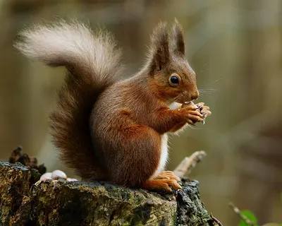
EichhörnchenHauptzeitFoto: Peter Trimming, CC BY 2.0 – Lizenzangaben im Bildnachweis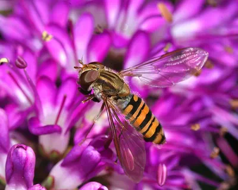
HainschwebfliegeHauptzeitFoto: Alvesgaspar, CC BY-SA 3.0 – Lizenzangaben im Bildnachweis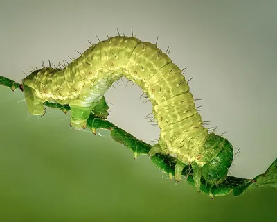
Kleiner FrostspannerHauptzeitFoto: Ermell, CC BY-SA 4.0 – Lizenzangaben im Bildnachweis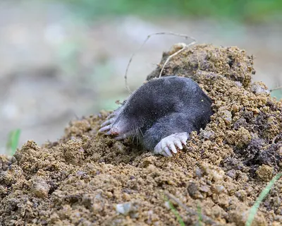
MaulwurfHauptzeitFoto: Christoph Moning, CC BY 4.0 – Lizenzangaben im Bildnachweis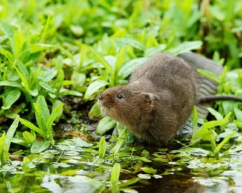
SchermausHauptzeitFoto: Peter Trimming, CC BY 2.0 – Lizenzangaben im Bildnachweis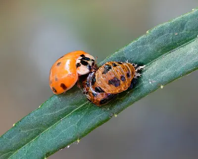
Asiatischer MarienkäferHauptzeitFoto: Ermell, CC BY-SA 4.0 – Lizenzangaben im Bildnachweis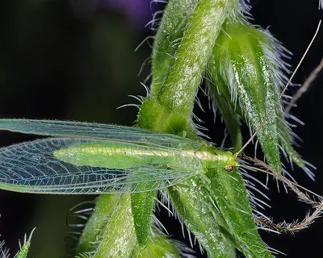
FlorfliegeHauptzeitFoto: Didier Descouens, CC BY-SA 4.0 – Lizenzangaben im Bildnachweis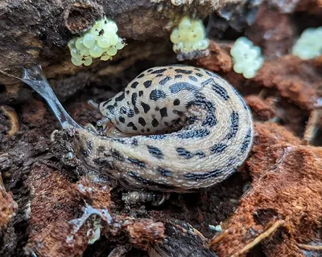
TigerschnegelHauptzeitFoto: Matt Muir, CC BY-SA 4.0 – Lizenzangaben im Bildnachweis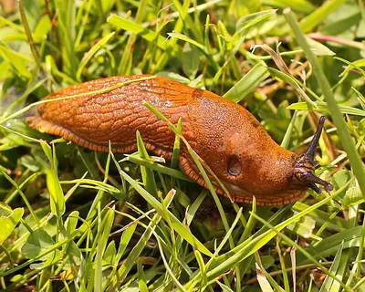
Spanische WegschneckeHauptzeitFoto: Kora27, CC BY-SA 4.0 – Lizenzangaben im Bildnachweis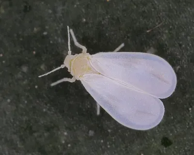
Weiße FliegeHauptzeitFoto: Dr. Guido Bohne, CC BY-SA 4.0 – Lizenzangaben im Bildnachweis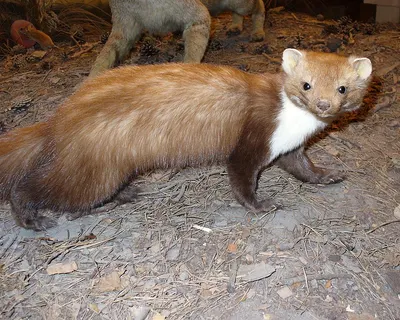
SteinmarderHauptzeitFoto: Franco Atirador, CC BY-SA 3.0 – Lizenzangaben im Bildnachweis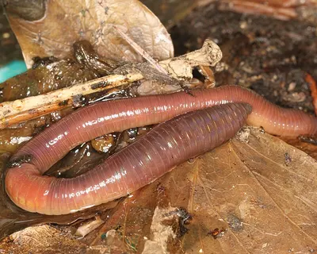
RegenwurmHauptzeitFoto: Donald Hobern, CC BY 2.0 – Lizenzangaben im Bildnachweis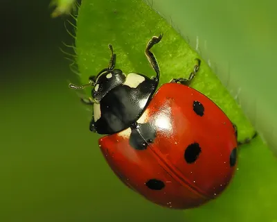
Siebenpunkt-MarienkäferHauptzeitFoto: Reytan, CC BY-SA 3.0 – Lizenzangaben im Bildnachweis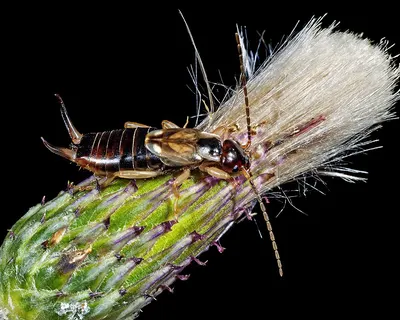
Gemeiner OhrwurmHauptzeitFoto: Didier Descouens, CC BY-SA 4.0 – Lizenzangaben im Bildnachweis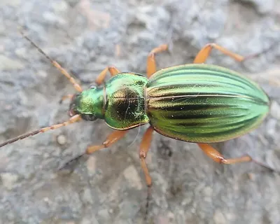
GoldlaufkäferHauptzeitFoto: Dr. Guido Bohne, CC BY-SA 4.0 – Lizenzangaben im Bildnachweis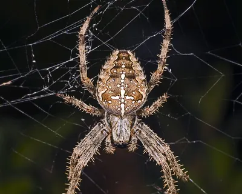
GartenkreuzspinneHauptzeitFoto: Didier Descouens, CC BY-SA 3.0 – Lizenzangaben im Bildnachweis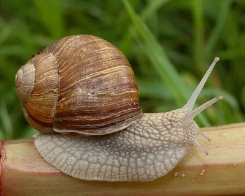
WeinbergschneckeHauptzeitFoto: Waugsberg, CC BY-SA 3.0 – Lizenzangaben im Bildnachweis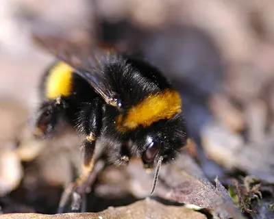
Dunkle ErdhummelHauptzeitFoto: Vera Buhl, CC BY-SA 3.0 – Lizenzangaben im Bildnachweis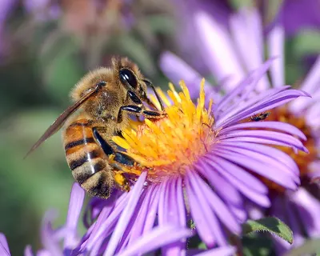
HonigbieneHauptzeitFoto: John Severns, Gemeinfrei – Lizenzangaben im Bildnachweis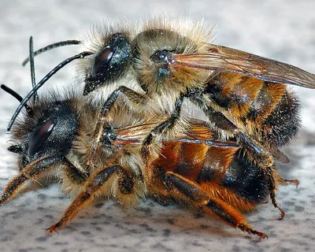
Rote MauerbieneHauptzeitFoto: André Karwath aka Aka, CC BY-SA 2.5 – Lizenzangaben im Bildnachweis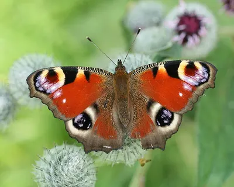
TagpfauenaugeHauptzeitFoto: Korall, CC BY-SA 3.0 – Lizenzangaben im Bildnachweis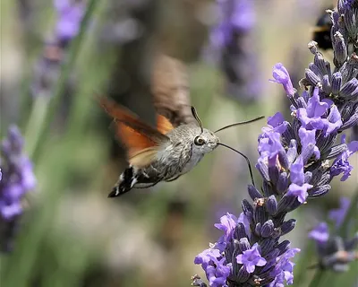
TaubenschwänzchenHauptzeitFoto: IronChris, CC BY-SA 3.0 – Lizenzangaben im Bildnachweis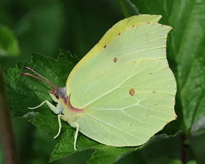
ZitronenfalterHauptzeitFoto: Böhringer Friedrich, CC BY-SA 2.5 – Lizenzangaben im Bildnachweis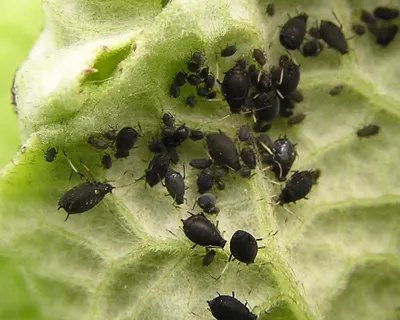
Schwarze BohnenlausHauptzeitFoto: Michael Becker, CC BY-SA 3.0 – Lizenzangaben im Bildnachweis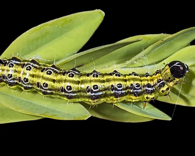
BuchsbaumzünslerHauptzeitFoto: Didier Descouens, CC BY-SA 4.0 – Lizenzangaben im Bildnachweis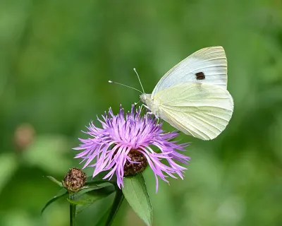
Großer KohlweißlingHauptzeitFoto: Uoaei1, CC BY-SA 4.0 – Lizenzangaben im Bildnachweis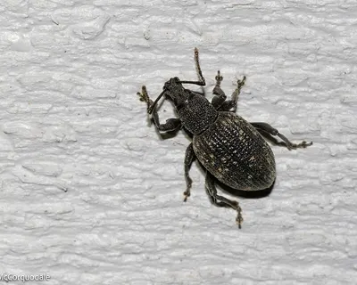
Gefurchter DickmaulrüsslerHauptzeitFoto: David McCorquodale, CC BY 4.0 – Lizenzangaben im Bildnachweis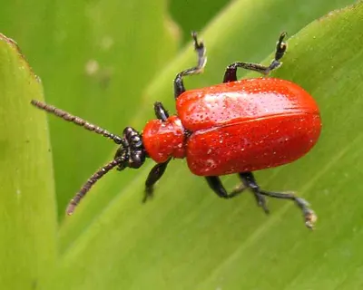
LilienhähnchenHauptzeitFoto: Sven Grand, CC BY-SA 2.0 de – Lizenzangaben im Bildnachweis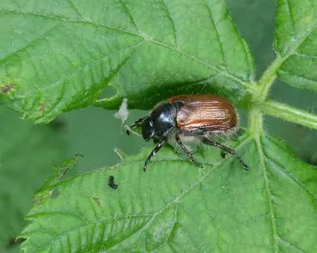
GartenlaubkäferHauptzeitFoto: Michel Langeveld, CC BY-SA 4.0 – Lizenzangaben im Bildnachweis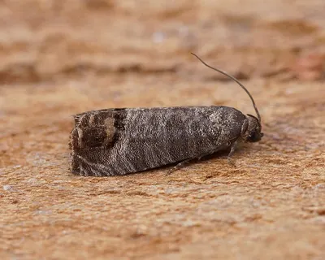
ApfelwicklerHauptzeitFoto: Ben Sale, CC BY 2.0 – Lizenzangaben im Bildnachweis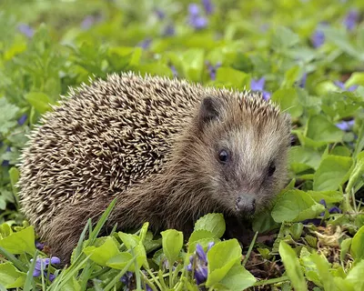
IgelHauptzeitFoto: Michael Gäbler, CC BY-SA 3.0 – Lizenzangaben im Bildnachweis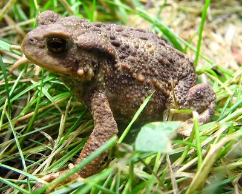
ErdkröteHauptzeitFoto: Taka, CC BY-SA 3.0 – Lizenzangaben im Bildnachweis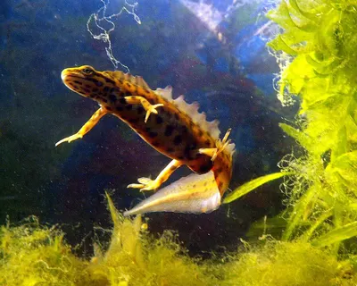
TeichmolchHauptzeitFoto: Piet Spaans, CC BY-SA 2.5 – Lizenzangaben im Bildnachweis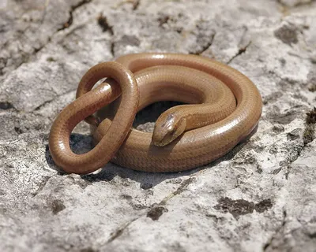
BlindschleicheHauptzeitFoto: Hans Hillewaert, CC BY-SA 4.0 – Lizenzangaben im Bildnachweis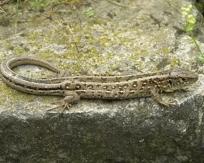
ZauneidechseHauptzeitFoto: Krzysztof Mizera, CC BY-SA 3.0 – Lizenzangaben im Bildnachweis
Arten
-
 Foto: Ben Sale, CC BY 2.0 – Lizenzangaben im Bildnachweis dämmerungsaktiv
Foto: Ben Sale, CC BY 2.0 – Lizenzangaben im Bildnachweis dämmerungsaktivApfelwickler
SchädlingeUnscheinbarer grauer Falter, dessen Raupe sich bis zum Kerngehäuse in Äpfel frisst.
-
 Foto: Ermell, CC BY-SA 4.0 – Lizenzangaben im Bildnachweis tagaktiv
Foto: Ermell, CC BY-SA 4.0 – Lizenzangaben im Bildnachweis tagaktivAsiatischer Marienkäfer
NützlingeEingeschleppter Marienkäfer mit wechselndem Kleid: gelb, orange oder schwarz, mit null bis neunzehn Punkten.
-
 Foto: Hans Hillewaert, CC BY-SA 4.0 – Lizenzangaben im Bildnachweis dämmerungsaktiv
Foto: Hans Hillewaert, CC BY-SA 4.0 – Lizenzangaben im Bildnachweis dämmerungsaktivBlindschleiche
Amphibien & ReptilienBeinlose Echse mit glatten, glänzenden Schuppen. Sie ist keine Schlange und frisst gern Nacktschnecken.
-
 Foto: Didier Descouens, CC BY-SA 4.0 – Lizenzangaben im Bildnachweis nachtaktiv
Foto: Didier Descouens, CC BY-SA 4.0 – Lizenzangaben im Bildnachweis nachtaktivBuchsbaumzünsler
SchädlingeEingeschleppter Falter, dessen grün-schwarze Raupen Buchsbäume von innen heraus kahl fressen.
-
 Foto: Vera Buhl, CC BY-SA 3.0 – Lizenzangaben im Bildnachweis tagaktiv
Foto: Vera Buhl, CC BY-SA 3.0 – Lizenzangaben im Bildnachweis tagaktivDunkle Erdhummel
BestäuberPelzige, laut brummende Hummel mit gelben Binden und weißem Hinterleibsende. Eine der ersten im Frühjahr.
- Foto: Peter Trimming, CC BY 2.0 – Lizenzangaben im Bildnachweis tagaktiv
Eichhörnchen
SäugetiereFlinker Kletterer mit buschigem Schwanz, der im Herbst Nüsse für den Winter vergräbt.
-
 Foto: Taka, CC BY-SA 3.0 – Lizenzangaben im Bildnachweis nachtaktiv
Foto: Taka, CC BY-SA 3.0 – Lizenzangaben im Bildnachweis nachtaktivErdkröte
Amphibien & ReptilienWarzige, braune Kröte mit kupferroten Augen, die nachts Schnecken und Käfer frisst.
-
 Foto: Didier Descouens, CC BY-SA 4.0 – Lizenzangaben im Bildnachweis nachtaktiv
Foto: Didier Descouens, CC BY-SA 4.0 – Lizenzangaben im Bildnachweis nachtaktivFlorfliege
NützlingeZartes, hellgrünes Insekt mit goldenen Augen und durchsichtigen Flügeln, das nachts ans Licht fliegt.
-
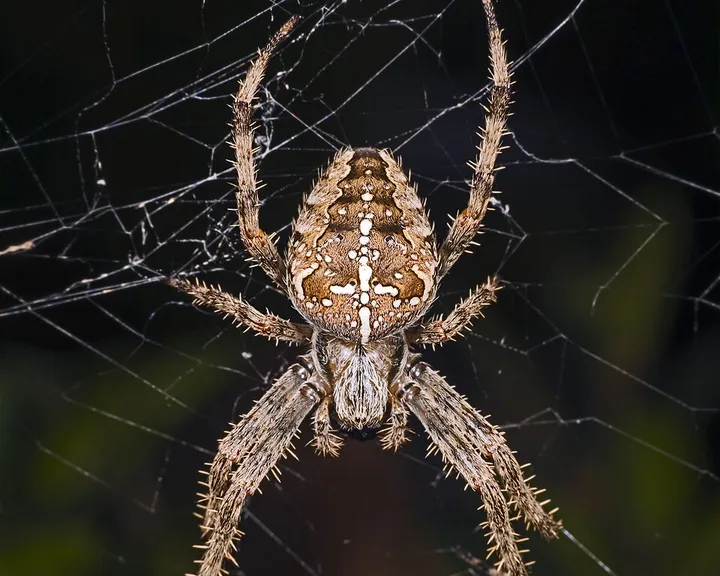
Foto: Didier Descouens, CC BY-SA 3.0 – Lizenzangaben im BildnachweistagaktivnachtaktivGartenkreuzspinne
NützlingeDie Spinne mit dem weißen Kreuz auf dem Rücken und den großen Radnetzen zwischen Sträuchern.
-
 Foto: Michel Langeveld, CC BY-SA 4.0 – Lizenzangaben im Bildnachweis tagaktiv
Foto: Michel Langeveld, CC BY-SA 4.0 – Lizenzangaben im Bildnachweis tagaktivGartenlaubkäfer
SchädlingeKleiner Käfer mit grün glänzendem Halsschild, der im Juni schwärmt. Seine Engerlinge fressen Rasenwurzeln.
-
 Foto: David McCorquodale, CC BY 4.0 – Lizenzangaben im Bildnachweis nachtaktiv
Foto: David McCorquodale, CC BY 4.0 – Lizenzangaben im Bildnachweis nachtaktivGefurchter Dickmaulrüssler
SchädlingeNachtaktiver Rüsselkäfer, der halbrunde Buchten in Blätter frisst. Seine Larven zerstören Wurzeln.
-
 Foto: Didier Descouens, CC BY-SA 4.0 – Lizenzangaben im Bildnachweis nachtaktiv
Foto: Didier Descouens, CC BY-SA 4.0 – Lizenzangaben im Bildnachweis nachtaktivGemeiner Ohrwurm
NützlingeBrauner Nachtjäger mit Zange am Hinterleib. Er kriecht weder in Ohren noch kneift er ernsthaft.
-
 Foto: Dr. Guido Bohne, CC BY-SA 4.0 – Lizenzangaben im Bildnachweis tagaktivnachtaktiv
Foto: Dr. Guido Bohne, CC BY-SA 4.0 – Lizenzangaben im Bildnachweis tagaktivnachtaktivGoldlaufkäfer
NützlingeMetallisch goldgrün glänzender Laufkäfer, der flink über die Beete rennt und Schnecken jagt.
-
 Foto: Uoaei1, CC BY-SA 4.0 – Lizenzangaben im Bildnachweis tagaktiv
Foto: Uoaei1, CC BY-SA 4.0 – Lizenzangaben im Bildnachweis tagaktivGroßer Kohlweißling
SchädlingeWeißer Schmetterling mit schwarzen Flügelspitzen, dessen Raupen in Gruppen Kohl kahl fressen.
-
 Foto: Alvesgaspar, CC BY-SA 3.0 – Lizenzangaben im Bildnachweis tagaktiv
Foto: Alvesgaspar, CC BY-SA 3.0 – Lizenzangaben im Bildnachweis tagaktivHainschwebfliege
NützlingeGelb-schwarz gebänderte Fliege, die wie festgenagelt in der Luft steht. Harmlos, denn sie kann nicht stechen.
-
 Foto: John Severns, Gemeinfrei – Lizenzangaben im Bildnachweis tagaktiv
Foto: John Severns, Gemeinfrei – Lizenzangaben im Bildnachweis tagaktivHonigbiene
BestäuberDie Biene des Imkers: schlank, bräunlich und im Frühjahr unermüdlich in den Obstblüten unterwegs.
-
 Foto: Michael Gäbler, CC BY-SA 3.0 – Lizenzangaben im Bildnachweis nachtaktiv
Foto: Michael Gäbler, CC BY-SA 3.0 – Lizenzangaben im Bildnachweis nachtaktivIgel
SäugetiereStacheliger Nachtwanderer, der auf seiner Runde mehrere Gärten besucht und dabei Käfer und Raupen frisst.
-
 Foto: Ermell, CC BY-SA 4.0 – Lizenzangaben im Bildnachweis nachtaktiv
Foto: Ermell, CC BY-SA 4.0 – Lizenzangaben im Bildnachweis nachtaktivKleiner Frostspanner
SchädlingeFalter, der im Spätherbst fliegt. Die Weibchen können nicht fliegen und klettern die Obstbäume hinauf.
-
 Foto: Sven Grand, CC BY-SA 2.0 de – Lizenzangaben im Bildnachweis tagaktiv
Foto: Sven Grand, CC BY-SA 2.0 de – Lizenzangaben im Bildnachweis tagaktivLilienhähnchen
SchädlingeLeuchtend lackroter Käfer, der mit seinen Larven Lilien und Kaiserkronen zerfrisst.
-
 Foto: Christoph Moning, CC BY 4.0 – Lizenzangaben im Bildnachweis tagaktivnachtaktiv
Foto: Christoph Moning, CC BY 4.0 – Lizenzangaben im Bildnachweis tagaktivnachtaktivMaulwurf
SäugetiereSamtschwarzer Gräber mit Schaufelhänden. Seine runden Hügel zeigen einen gesunden, wurmreichen Boden.
-
 Foto: Donald Hobern, CC BY 2.0 – Lizenzangaben im Bildnachweis nachtaktiv
Foto: Donald Hobern, CC BY 2.0 – Lizenzangaben im Bildnachweis nachtaktivRegenwurm
NützlingeDer wichtigste Gärtner unter der Erde: Er zieht Laub in seine Gänge und macht daraus fruchtbaren Humus.
-
 Foto: André Karwath aka Aka, CC BY-SA 2.5 – Lizenzangaben im Bildnachweis tagaktiv
Foto: André Karwath aka Aka, CC BY-SA 2.5 – Lizenzangaben im Bildnachweis tagaktivRote Mauerbiene
BestäuberFuchsrot behaarte Wildbiene, die im Frühling in Insektenhotels und Mauerritzen nistet.
-
 Foto: Peter Trimming, CC BY 2.0 – Lizenzangaben im Bildnachweis tagaktivnachtaktiv
Foto: Peter Trimming, CC BY 2.0 – Lizenzangaben im Bildnachweis tagaktivnachtaktivSchermaus
SäugetiereDie „Wühlmaus“ des Gartens: Sie frisst Wurzeln, Möhren und Tulpenzwiebeln und hinterlässt flache Erdhügel.
-
 Foto: Michael Becker, CC BY-SA 3.0 – Lizenzangaben im Bildnachweis tagaktiv
Foto: Michael Becker, CC BY-SA 3.0 – Lizenzangaben im Bildnachweis tagaktivSchwarze Bohnenlaus
SchädlingeMattschwarze Blattlaus, die im Frühsommer dichte Kolonien an Bohnen, Mohn und Dahlien bildet.
-
 Foto: Reytan, CC BY-SA 3.0 – Lizenzangaben im Bildnachweis tagaktiv
Foto: Reytan, CC BY-SA 3.0 – Lizenzangaben im Bildnachweis tagaktivSiebenpunkt-Marienkäfer
NützlingeDer bekannteste Glücksbringer im Garten: rot mit sieben schwarzen Punkten und ein eifriger Blattlausjäger.
-
 Foto: Kora27, CC BY-SA 4.0 – Lizenzangaben im Bildnachweis nachtaktiv
Foto: Kora27, CC BY-SA 4.0 – Lizenzangaben im Bildnachweis nachtaktivSpanische Wegschnecke
SchädlingeDie häufigste Nacktschnecke im Gemüsebeet: einfarbig orange bis rotbraun und nach Regen in Massen unterwegs.
-
 Foto: Franco Atirador, CC BY-SA 3.0 – Lizenzangaben im Bildnachweis nachtaktiv
Foto: Franco Atirador, CC BY-SA 3.0 – Lizenzangaben im Bildnachweis nachtaktivSteinmarder
SäugetiereDer Marder der Siedlungen: lebt gern in Scheunen und auf Dachböden und ist nachts unterwegs.
-
 Foto: Korall, CC BY-SA 3.0 – Lizenzangaben im Bildnachweis tagaktiv
Foto: Korall, CC BY-SA 3.0 – Lizenzangaben im Bildnachweis tagaktivTagpfauenauge
BestäuberRotbrauner Schmetterling mit vier großen, schillernden Augenflecken auf den Flügeln.
-
 Foto: IronChris, CC BY-SA 3.0 – Lizenzangaben im Bildnachweis tagaktiv
Foto: IronChris, CC BY-SA 3.0 – Lizenzangaben im Bildnachweis tagaktivTaubenschwänzchen
BestäuberEin Schmetterling, der wie ein Kolibri schwirrend vor Blüten steht und mit langem Rüssel Nektar saugt.
-
 Foto: Piet Spaans, CC BY-SA 2.5 – Lizenzangaben im Bildnachweis nachtaktiv
Foto: Piet Spaans, CC BY-SA 2.5 – Lizenzangaben im Bildnachweis nachtaktivTeichmolch
Amphibien & ReptilienKleiner Molch, der im Frühjahr im Gartenteich lebt. Das Männchen trägt dann einen gewellten Rückenkamm.
-
 Foto: Matt Muir, CC BY-SA 4.0 – Lizenzangaben im Bildnachweis nachtaktiv
Foto: Matt Muir, CC BY-SA 4.0 – Lizenzangaben im Bildnachweis nachtaktivTigerschnegel
NützlingeGroße, getigerte Nacktschnecke, die vor allem Welkes frisst und Gelege anderer Schnecken vertilgt.
-
 Foto: Waugsberg, CC BY-SA 3.0 – Lizenzangaben im Bildnachweis dämmerungsaktiv
Foto: Waugsberg, CC BY-SA 3.0 – Lizenzangaben im Bildnachweis dämmerungsaktivWeinbergschnecke
NützlingeDie größte heimische Gehäuseschnecke. Sie frisst vor allem welke Pflanzen und ist besonders geschützt.
-
 Foto: Dr. Guido Bohne, CC BY-SA 4.0 – Lizenzangaben im Bildnachweis tagaktiv
Foto: Dr. Guido Bohne, CC BY-SA 4.0 – Lizenzangaben im Bildnachweis tagaktivWeiße Fliege
SchädlingeWinzige weiße Insekten, die wie eine Wolke auffliegen, sobald man die Pflanze berührt.
-
 Foto: Krzysztof Mizera, CC BY-SA 3.0 – Lizenzangaben im Bildnachweis tagaktiv
Foto: Krzysztof Mizera, CC BY-SA 3.0 – Lizenzangaben im Bildnachweis tagaktivZauneidechse
Amphibien & ReptilienKräftige Eidechse, die sich an sonnigen Mauern wärmt. Die Männchen tragen im Frühjahr grüne Flanken.
-
 Foto: Böhringer Friedrich, CC BY-SA 2.5 – Lizenzangaben im Bildnachweis tagaktiv
Foto: Böhringer Friedrich, CC BY-SA 2.5 – Lizenzangaben im Bildnachweis tagaktivZitronenfalter
BestäuberZitronengelber Schmetterling, der schon an den ersten warmen Februartagen durch den Garten fliegt.
Kein Tier passt zu deiner Suche oder Auswahl.
Gut ausgerüstet für den Naturgarten
Alle Empfehlungen ansehen- Unser Tipp
Schneckenzaun aus Metall
Auswahl bei Amazon
Die abgekantete Oberkante hält Nacktschnecken dauerhaft vom Beet fern, ganz ohne Gift.
Bei Amazon ansehen Schneckenzaun aus Metall (Werbelink, öffnet in neuem Fenster) - Beispielfoto · Foto: Srl, CC BY-SA 3.0 – Lizenzangaben im Bildnachweis
 Unser Tipp
Unser TippHochbeet aus Holz
Auswahl bei Amazon
Rückenschonend gärtnern, und mit einer Schneckenkante kommen Nacktschnecken kaum noch an Salat und Gemüse.
Bei Amazon ansehen Hochbeet aus Holz (Werbelink, öffnet in neuem Fenster) - Beispielfoto · Foto: Dietmar Rabich, CC BY-SA 4.0 – Lizenzangaben im Bildnachweis
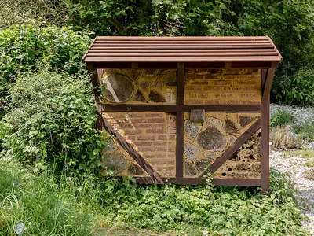
Unser TippNisthilfe für Wildbienen
Auswahl bei Amazon
Achte auf sauber gebohrte Löcher oder Röhrchen ohne Splitter und eine regengeschützte, sonnige Lage.
Bei Amazon ansehen Nisthilfe für Wildbienen (Werbelink, öffnet in neuem Fenster) - Beispielfoto · Foto: Albarubescens, CC BY-SA 4.0 – Lizenzangaben im Bildnachweis
 Unser Tipp
Unser TippMarienkäferlarven gegen Blattläuse
Auswahl bei Amazon
Lebende Larven, die direkt auf befallene Pflanzen gesetzt werden. Wirkt am besten bei frühem Befall.
Bei Amazon ansehen Marienkäferlarven gegen Blattläuse (Werbelink, öffnet in neuem Fenster) - Beispielfoto · Foto: 14GTR, CC BY-SA 4.0 – Lizenzangaben im Bildnachweis
 Unser Tipp
Unser TippIgelhaus, winterfest
Auswahl bei Amazon
Ein Unterschlupf für Winterschlaf und Kinderstube. Unter Hecke oder Laub an einen ruhigen Platz stellen.
Bei Amazon ansehen Igelhaus, winterfest (Werbelink, öffnet in neuem Fenster) - Beispielfoto · Foto: Hustvedt, CC BY-SA 3.0 – Lizenzangaben im Bildnachweis
 Unser Tipp
Unser TippWildkamera für den Garten
Auswahl bei Amazon
Zeigt dir, wer nachts unterwegs ist: Igel, Marder, Fuchs oder Eichhörnchen. Achte auf unsichtbares Infrarot (No-Glow).
Bei Amazon ansehen Wildkamera für den Garten (Werbelink, öffnet in neuem Fenster)
Werbelink: Wenn du über diesen Link etwas kaufst, erhält der Gartentierkompass eine kleine Provision von Amazon. Für dich ändert sich am Preis nichts. Als Amazon-Partner verdiene ich an qualifizierten Verkäufen.
Weiter entdecken
- Was frisst an meiner Pflanze?Löcher, Buchten, Gespinste und Hügel: vom Schadbild zum Verursacher, mit sanften Lösungen.
- Doppelgänger unterscheidenMarienkäfer oder Asiatischer Marienkäfer, Schwebfliege oder Wespe: 11 Vergleiche.
- Das GartenjahrKrötenwanderung, Schneckenzeit, Leimring: was im Garten wann passiert, Monat für Monat.
- AusrüstungNützlinge, Schneckenzaun, Nisthilfen und Lupe für einen naturnahen Garten.
- Vögel im Garten?Meise, Rotkehlchen und Co. findest du auf der Schwesterseite Vogelkompass.
- Fuchs, Reh oder Dachs?Größere Wildtiere und ihre Spuren findest du auf der Schwesterseite Waldtierkompass.